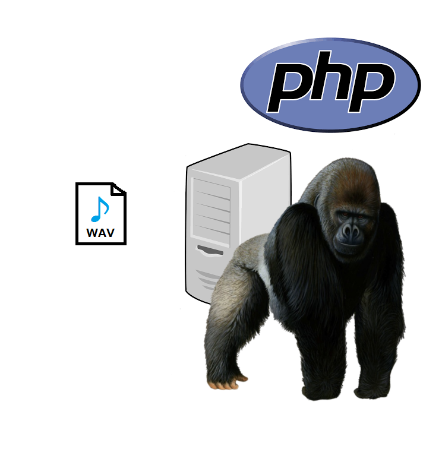

ウォーター Dash Button
-ワクワクを創造しよう-"水が無ければ生き物は生きられない"
2016/12/25放送 NHK プラネットアースⅡ 第1集 極限の地のサバイバルより
そう、水が無ければ
我々は生きられない。
社内勤務者にとって
生命の水である
ウォーターサーバー、
"コスモウォーター”の
自動発注システムが
ここに誕生した。
こんにちわ
昨晩夜なべして
作った当資料が
今朝PC再起動したら
0バイトになっていた
藤井です。
アイデアを語るけど、
コード化しないエンジニアのみなさん こんにちわ
"OUTPUTする男”
こと藤井です。
初めてのIoT作品
Amazon Dash Button
改め
ウォーター Dash Button
そもそも
Amazon Dash Buttonとは？
ボタンをポチッとするだけで、
商品が届くサービス
先人達の知恵により、
簡単にハック可能
ただの物理ボタンとして
利用することも
つまり
Amazon Dash Buttonを押すと
任意のプログラムを実行可能
そうだ!!!
ウォーターサーバーを
自動発注化してみよう
現状フロー
[1]
水がないことに気づく
(約2秒)
[2]
発注済みか声かけて確認する
(10秒*10人：約100秒)
[3]
自動応答電話注文
(新人さん：2分*2人：4分)
年間営業日数：245日
(365-120)
1オーダー：1セット
(2個)
平均1個あたり消費日数：2日
年間消費数：120個(60セット)
(2日/245日)
年間注文回数：60回
[現状]
年間注文工数：300分(5時間)
(オーダー60回 * 注文時間約5分)
ウォーター Dash Button
導入後フロー
[1]
水がないことに気づく
(約2秒)
[2]
ボタン押す
(約2秒)
[3]
注文成功メール確認
(20秒)
1オーダー
30秒かからない！
[導入後]
年間注文工数：30分
(オーダー60回 * 注文時間30秒)
つまり
なんだかんだで
実質0分
仕組み

[1]
ダッシュボタンを押す
[2]
nodeが押されたことを感知し
phpを実行する
[3]
電話システムのあるサーバーのphpを実行する
[4]
電話システムを実行する
[5]
コスモウォーターに電話し、
自動音声に対してオーダーする
[6]
電話内容をwavファイルに保存する
[7]
wavファイルをメール添付
[8]
メール送信
[9]
数日後、水が届く
あとはあなたの得意な言語で書いた
プログラムを呼び出すだけ
アイデア次第で簡単にIoTできます
ボタン代500円
ウォーター Dash Button、
デフォルト発注個数等は
configファイルに記載しています
管理画面で設定値の変更や
注文履歴が見れるようにしたい
私、教えます
(注)PHPに限る
[実装済み機能]
[募集]
引き続き
一緒に開発してくれる方、
募集しております。
お気軽にお声がけください
٩(ˊᗜˋ*)و
[学び]
git initするスペースキーまたは矢印キーでスライドします